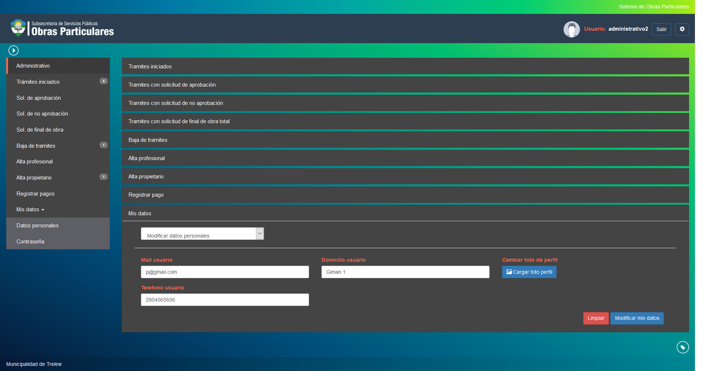

Modificar datos personales¶
Esta opcion permite cambiar sus datos personales. Las opciones a poder cambiar son las siguientes:
- Mail usuario: Cambia el nombre de la persona.
- Telefono usuario: Cambia el telefono de la persona.
- Domicilio usuario: Cambia el domicilio de la persona.
Puede confirmar el cambio de datos haciendo click en el boton o volver a cargar los campos haciendo click en el boton
